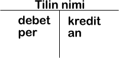
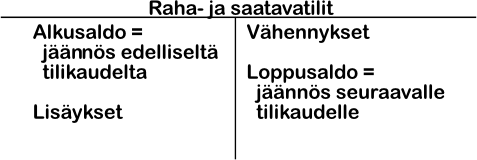
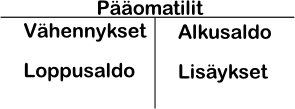
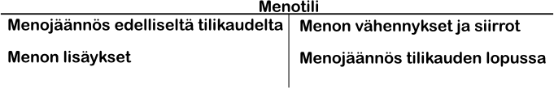
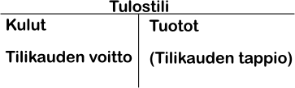
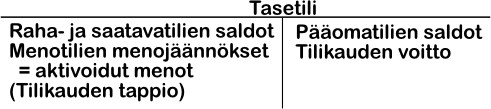

Kirjanpito on tietojärjestelmä, jossa ylläpidetään tietoa yrityksen tai yhteisön taloudellisesta toiminnasta ja tilasta yksittäisen liiketapahtuman tarkkuudella. Kirjanpidolla tarkoitetaan myös tapahtumien kirjaamista kirjanpitoon ja muita siihen liittyviä toimintoja.
Kirjanpito voi olla kokonaan manuaalista, mutta nykyään se yleensä toteutetaan osittain tai kokonaan koneellisesti. Kirjanpidosta tuotetaan lakisääteisiä ja muita raportteja yrityksen tai yhteisön omaan sekä sen sidosryhmien tarpeisiin. Eräs kirjanpidon tärkeistä tehtävistä on yksityisten ja yrityksen varojen erillään pitäminen.
Kirjanpitovelvollisuudesta on säädetty kirjanpitolaissa. Sen mukaan:
Kahdenkertainen kirjanpito on kahden taloudellisen asian muistiinmerkitsemistä:
Nuo kaksi asiaa ovat luonnollisesti aina yhtä suuret. Kahdenkertaisessa kirjanpidossa jokaisella tilillä on kaksi "puolta", debet ja kredit. Debet-puolelle kirjataan kaikki rahan käyttö ja Kredit-puolelle rahan lähde, poikkeuksetta. Taseessa omaisuustileillä on kirjattuna pitkävaikutteiset menot, vielä myymätön vaihto-omaisuus sekä rahoitusomaisuus. Pääomatileillä, taseen Kredit-puolella on kirjattuna rahan lähteinä velat omistajille eli oma pääoma sekä velat ulkopuolisille ja lisäksi tilikauden voitto.
Hyvä kirjanpitotapa tarkoittaa kirjanpitolakia täydentäviä periaatteita jotka sallivat useita ratkaisuja kirjanpidon käytännön toteuttamisessa ja soveltamisessa kirjanpitovelvollisen oloihin. Hyvää kirjanpitotapaa ei ole laissa täsmällisesti määritelty, mutta sen piirteitä löytyy useista lähteistä: kirjanpitolaista, kirjanpitoasetuksesta, muusta lainsäädännöstä, kirjanpito- ja muun lainsäädännön nojalla annetuista kirjanpitoa koskevista viranomaismääräyksistä, kirjanpitolautakunnan ohjeista ja lausunnot jne.
Kirjanpitovelvollisen on kirjanpitolain 1:3 §:n mukaan noudatettava kaikissa kirjanpidon vaiheissa, sekä juoksevassa kirjanpidossa että tilinpäätöksessä, hyvää kirjanpitotapaa.
Kirjanpitolain mukaan yrityksen tilikausi on 12 kuukautta. Tästä voidaan kuitenkin erityisistä syistä poiketa, mikäli yritys tai elinkeinonharjoittaja hakee poikkeavaa tilikautta. Kirjanpitolain mukaan esimerkiksi toimintaa aloitettaessa tai lopetettaessa taikka tilinpäätöksen ajankohtaa muutettaessa tilikausi saa olla lyhyempi tai pitempi, kuitenkin enintään 18 kuukautta. Usein tilikautena pidetään normaalia kalenterivuotta mutta se ei ole pakollista.
Totaalitilikausi on termi yrityksen kaikille yhteenlasketuille tilikausille. Perustamisesta lopettamiseen. Vain totaalitilikauden perusteella voidaan tarkasti määritellä onko yritys ollut kannattava, koska mahdollisuutta esimerkiksi saatavien ja sijoitusten arvon eri tulkintoihin ei ole.
Kirjanpitovelvollisen kaikilla liikkeillä, siis kaikilla samaan konserniin kuuluvilla yrityksillä, on oltava sama tilikausi. Muuten konsernitilinpäätöksen tekeminen olisi käytännössä mahdotonta.
Liiketapahtumat ovat menot, tulot ja rahoitustapahtumat sekä näiden oikaisu- ja siirtoerät. Juokseva kirjanpito on näiden muistiinmerkitsemistä.
Menot syntyvät tavaroiden ja palveluiden ( ns. tuotannontekijöiden) hankkimisesta. Tuotannontekijät voidaan jakaa pitkä- ja lyhytvaikutteisiin. Pitkävaikutteiset ovat käytössä monen tilikauden ajan (esim. kiinteistöt, atk-laitteet, jne), lyhytvaikutteiset taas käytetään saman tilikauden aikana. Suurin osa hankinnoista ovat yleensä lyhytvaikutteisia. Meno syntyy tuotannontekijän luovutushetkellä.
Tulot syntyvät tavaroiden ja palveluiden (ns. suoritteiden) myynnistä. Tulo syntyy suoritteen luovutushetkellä.
Rahoitustapahtuma aiheutuu menoista ja tuloista. Kun yhdistys maksaa hankintoja tai saa maksun tuotteesta syntyy rahoitustapahtuma. Rahoitustapahtumia syntyy myös m.m. jos yhdistys ottaa tai myöntää lainoja.
Kaikille liiketapahtumatyypeille voidaan antaa omat kirjaussäännöt.
Liiketapahtumat kirjataan kirjanpitoon tileille. Tili on kaksipuoleinen laskelma, jolla seurataan menojen, tulojen ja rahoituserien muutoksia. Tilin toiselle puolelle kirjataan tietyn asian lisäykset, toiselle sen vähennykset.
Tilit nimetään sen mukaan mitä osaa yhdistyksen taloudesta ja/tai omaisuudesta sillä käsitellään (esim. Käteiskassa-tilillä seurataan yhdistyksen käteiskassaa).
Tilejä kuvataan yleensä tiliristikolla, jossa vasen puoli on tilin debet/per-puoli ja oikea kredit/an-puoli.
Tilin debet-puolelle tehtävä merkintä osoittaa aina rahan käytön ja kredit-puolen merkintä rahan lähteen.
Kaikki liiketapahtumat löytyvät aina kahdelta tililtä, toisen tilin debet-puolella ja toisen kredit-puolella. Tästä tulee nimi kaksinkertainen kirjanpito.
Tilit jaotellaan liiketapahtumatyypin mukaan. Tilinpäätöstä varten tarvitaan tilinpäätöstilit.
Raha- ja saatavatileillä seurataan rahojen ja saatavien määrää sekä niiden muutoksia. Raha- ja saatavatileille kirjaukset tehdään seuraavasti:
Kirjanpidon systematiikan mukaan lisäykset ja alkusaldo tulevat aina samalle puolelle. Vähennykset tulevat lisäysten kannalta vastakkaiselle puolelle. Loppusaldo lasketaan tilin puolten erotuksena, ja se merkitään tilin pienemmälle puolelle s.e. se mukaanlaskien puolten erotus on 0.
Käteiskassa, pankkitili ja eri myyntisaamistilit ovat tavallisempia raha- ja saatavatilejä. Esimerkiksi Käteiskassa-tilin debet-puolelle kirjataan kaikki käteisen rahan lisäykset. Käteiskassasta suoritetut maksut kirjataan puolestaan tilin debet- puolelle.
Myyntisaamiset lisääntyvät kun tavara luovutetaan ja siitä tehdään lasku. Lähetetyt laskut aiheuttavat kirjauksen Myyntisaamiset-tilin debet-puolelle (ja Myyntitilin kredit-puolelle). Jos osa tavaroista palautetaan tehdään hyvityslasku joka kirjataan Myyntisaamiset-tilin kredit-puolelle (ja Myyntitilin debet-puolelle). Kun asiakas maksaa laskun kirjataan tapahtuma Myyntisaamistilin kredit-puolelle (ja Pankkitili-tilin debet-puolelle).
Tietokillassa on ollut tapana käyttää maksuperusteista kirjanpitoa jolloin liiketapahtumat merkitään vasta maksun tapahtuessa, eikä näin ollen käytetä Myyntisaamiset-tiliä vaan tapahtuma kirjattaisiin suoraan Myynti- ja Pankkitili-tileille.
Pääomatilit näyttävät miten paljon yhdistykellä on oma pääomaa ja vierasta pääomaa (eli velkaa). Yhdistyksen oma pääoma koostuu yleensä edellisten tilikausien ylijäämistä. Pääomatileille tehdään kirjaukset seuraavan periaatteen mukaan:
Pääomatilien kirjaussääntö voidaan johtaa Kassatilin kannalta. Uusien lainojen nosto merkitsee Kassatilille lisäystä, joka siis kirjataan Kassatilin debet-puolelle. Velan lisääntyminen siis puolestaan kirjataan Lainatilin kredit-puolelle.
Ostovelkatili voidaan mieltää Myyntisaamistilin peilikuvaksi. Ostolasku kirjataan sen saapuessa Ostovelkatilin kredit-puolelle velan lisäykseksi (ja tietysti toisen tilin debet-puolelle ostetun tuotteen mukaan). Kun lasku myöhemmin maksetaan tulee kirjaus Ostovelkatilin debet-puolelle (velan vähennys) ja kassatilin kredit-puolelle (rahan lähde).
Kuten yllä todettiin on Tietokillassa ollut tapana käyttää maksuperusteista kirjanpitoa jolloin Ostovelkatiliä ei käytetä.
Menot syntyvät ns. tuotannontekijöiden hankinnasta. Näitä ovat Tietokillan tapauksessa esim. haalarit, liput tapahtumiin, jne. Menot kirjataan tililleen seuraavan periaatteen mukaisesti:

Menon vastakirjaus tulee yleensä jonkin rahoitustilin kredit-puolelle. Meno aiheuttaa siis rahan vähenemisen ja velan lisääntymisen, joka kirjataan asianomaisen tilin kredit-puolelle. Näin ollen menotilille kirjaus tulee debet-puolelle.
Menon vähennyksiä voivat aiheuttaa seim. käteisalennukset tai hyvityslaskut. Tällöin kirjaus on käänteinen menon lisäykseen nähden. Kirjaus tulee siis menotilin kredit-puolelle ja rahoitustilin debet-puolelle.
Yhdistys saa tuloja kun se luovuttaa tuotteita asiakkailleen (jäsenilleen). Tietokilta saa tuloja esim. haalarimerkkien ja tapahtumalippujen myynnistä. Tulot kirjataan seuraavan periaatteen mukaan:
Tulo aiheuttaa vastakirjauksen rahoitustilin debet-puolelle. Tulon seurauksena rahat tai saatavat lisääntyvät. Koska rahan lisäys tulee debet-puolelle, tulee kirjaus tulotilin kredit-puolelle.
Tilikauden päättyessä laaditaan tilinpäätös Tätä varten tarvitaan tilinpäätöstilit Tulostili ja Tasetili. Tilinpäätöksessä kaikki tilikauden aikana käytetyt tilit päätetään tilinpäätöstileille. Kultakin raha- ja saatavatililtä, pääomatililtä, menotililtä ja tulotililtä lasketaan saldo, joka merkitään pienemälle puolelle ja joko Tulos- tai Tasetilille vastakkaiselle puolelle.
Tulostilin avulla selvitetään tehtiinkö tilikaudella voittoa vai tappiota. Tulostilille päätetään kaikki tilikaudelle kuuluvat menot ja tulot. Tulo kuuluu tilikaudelle jolla suorite on luovutettu asiakkaalle. Tilikaudelle kuuluvia tuloja nimitetään tuotoiksi. Tuotoista vähennetään kuluina tilikaudelle kuuluvat menot. Nämä ovat ne menot joista ei odoteta tuloja tulevina tilikausina, eli esim. myytyjen tavaroiden hankintamenot. Näitä menoja kutsutaan siis kuluiksi.
Tasetilille päätetään kaikki raha- ja saatavatilit sekä pääomatilit. Tasetilille päätetään myös menotilien menojäännökset, eli ne osat menoista joista odotetaan tuloja tulevina tilikausina. Näitä ei saa kirjata päätettävän tilikauden kuluiksi sillä tulo niistä on vielä saamatta. Esimerkiksi jos on ostettu tuote jälleenmyyntiin, mutta sitä ei olla myyty eteenpäin ei sen hankintamenoa voida merkitä kuluksi. Menojen kirjaamista tasetilille sanotaan menojen aktivoimiseksi. Tietokillassa on aktivoitu esim. haalarimerkit taseeseen sillä niitä tilataan kerralla moneksi vuodeksi eteenpäin. Aiemmin aktivoituneista menoista deaktivoidaan se osa josta tulot on saatu päätettävällä tilikaudella, eli haalarimerkkien osalta deaktivoidaan myytyjen haalarimerkkien hankitamenot taseesta.

Tilikauden tulos lasketaan Tulostilin tuottojen ja kulujen erotuksena. Mikäli tuotot ovat suuremmat kuin kulut on tilikausi voitollinen, muutoin se on häviöllinen (tai sitten tehtiin nollatulos). Tilikauden voiton/tappion kirjaamisen jälkeen tulostilin saldon tulee olla 0.

Kun kaikki tilit on päätetty joko Tulos- tai Tasetilille lasketaan Tulostilin saldo ja kirjataan se Tasetilille. Tällöin myös Tasetili menee tasan, mikäli näin ei kuitenkaan ole on kirjanpidossa jokin virhe ja se tulee pikimmiten tarkistaa.
Kirjanpidossa on kolme päävaihetta: tilinavaus, jatkuva kirjanpito (eli liiketapahtumien kirjaaminen) ja tilinpäätös.
Tilinavauksessa merkitään alkusaldot tileille. Tämä tehdään edeltävän tilikauden tilinpäätöksen pohjalta. Kaikille niille tileille, joiden saldot on tilinpäätöksessä päätetty Tasetilille, merkitään sama rahamäärä alkusaldoksi. Näitä tilejä ovat raha- ja saatavatilit sekä pääomatilit. Myös menojäännökset kirjataan alkusaldoksi asianomaisille menotileille. Alkusaldo merkitään sille puolelle tiliä, joilla rahamäärä on Tasetilille.
Tilikauden aikana liiketapahtumat kirjataan tositteiden perusteella kirjanpitoon. Kirjanpitolaki edellyttää että liiketapahtumat kirjataan sekä aika- että asiajärjestykseen. Kirjaamista varten tositteet numeroidaan, minkä jälkeen ne kirjataan aikajärjestykseen päiväkirjaan ja asiajärjestykseen pääkirjaan. Päiväkirjassa seurataan mitä mihinkin aikaan on tapahtunut, siitä voidaan helposti nähdä liiketapahtumien aikajärjestys ja esim. vuodenaikaan liittyvät vaihtelut. Pääkirjassa vuorostaan seurataan liiketapahtumia tilikohtaisesti, eli siitä nähdään helposti esim. kaikki haalarimerkkimyyntiin liittyvät tilitapahtumat.
Tilinpäätös laaditaan, kuten yllä nähtiin, päättämällä kaikki tilikaudella käytetyt tilit joko Tulos- tai Tasetilille. Tämän lisäksi on laadittava vielä tilinpäätösraportit joita ovat toimintakertomus, Tulostilin perusteella laadittava tuloslaskelma, Tasetilin perusteella laadittava tase, tuloslaskelman ja taseen liitetiedot sekä tase-erittely.
Jokaisen liiketapahtuman kirjauksen tulee perustua tositteeseen. Tositteen tehtävänä on toimia todisteena liikatapahtumasta. Tositteen tulee mieluiten olla ulkopuolisen antama, esim. kuitti, tiliote, jne. Joitain tositteita laaditaan kuitenkin itse, esimerkiksi jos joku maksaa killan jäsenyyden käteisellä kirjoitetaan tästä kuitti jonka yksi osa tulee tositteeksi kirjanpitoon ja toinen osa annetaan jäsenyytensä maksaneelle henkilölle. Tositteiden tulee olla laadittuja pysyvällä tavalla, eli lyijykynää ei saa käyttä ja musteen pitää olla arkistointikelpoista jos se tulostetaan.
Tositteiden tulee olla päivättyjä jotta niistä nähdään liiketapahtuman ajankohta. Tämän lisäksi tositteet numeroidaan kirjanpitoa varten. Tositteesta tulee myös käydä ilmi mitä tuotteita ja/tai palveluita se koskee, mille tilille se kirjataan ja tietysti rahasumma.
Tositteet on säilytettävä vähintään kuusi vuotta sen vuoden lopusta, jonka aikana tilikausi on päättynyt. Ne voidaan säilyttää paperituloisteina tai koneellisilla tietovälineillä.
Kirjanpitolaki velvoittaa jokaista kirjanpitovelvollista säilyttämään kirjallisessa muodossa oleva tililuettelo käyttöaikaa koskevilla merkinnöillä varustettuna. Tililuettelo koostuu yleensä tilien numeroista ja nimistä. Tilin nimi kuvailee yleensä sen sisältöä ja kirjanpitolaki ei vaadi että tililuettelo sisältää muita selityksiä taikka kirjausohjeita. On kuitenkin hyvän kirjanpitotavan mukaista oheistaa tililuetteloon tilien käyttötarkoitusta ja sisältö selventäviä selityksiä ja ohjeita. Tämä on erityisen tärkeätä Tietokillan kaltaisen yhdistyksen osalta jossa kirjanpidosta vastaava henkilö vaihtuu vuosittain. Hyvillä ohjeilla voidaan helpoittaa uuden henkilön tehtävien omaksumista huomattavasti.
Tililuettelon laajuus vaihtelee liiketoiminnan luonteen ja kirjanpidolle asetettavien vaatimusten mukaan. Tietokillassa esimerkiksi halutaan eritellä haalarimerkkimyyntitulot muista tuloista, mutta tuloja ei eritellä merkkikohtaisesti.
Tililuettelon järjestys voi määräytyä tuloslaskelma- ja tasekaavojen mukaan, jolloin järjestys on helppo muistaa. Tietokoneistetussa kirjanpidossa tilit on numeroitava, mikä ei manuaalisessa kirjanpidossa ole välttämätöntä.
Eri tilikausien tilinpäätösten vertailtavuuden varmistamiseksi kirjanpitolaki edellyttää, että jokaisen tilin on pysyttävä sisällöltään samana. Tilien sisältö voidaan kuitenkin muuttaa toiminnan kehityksen, tililuettelon muutoksen tai muun erityisen syyn vuoksi. Muutokset pyritään tekemään aina tilikauden vaihtuessa. Mikäli kesken tilikauden otetaan käyttöön uusia tilejä on aiemmat saman tilikauden asianomaiset kirjaukset oikaistava. Tietokillassa voitaisiin esimerkiksi päättää kesken tilikauden erotella eri haalarimerkkien myynnit omille tileilleen, tällöin tulisi aiemmin haalarimerkkimyynti-tilille tehdyt kirjaukset erotella oikaisukirjauksilla merkkikohtaisille tileille.